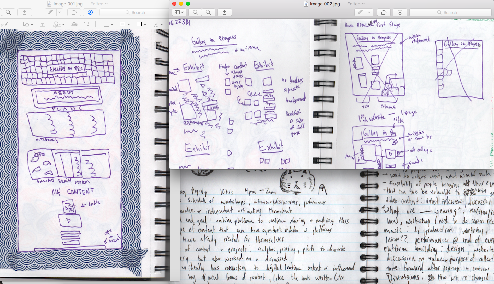

Plans
Here are some sketches and written brainstorms for the website and pop-up gallery
Here are some notes and conversations that helped me brainstorm. Google Doc can be found here
A work in progress website and project to create an online network for creators to collaborate and share their works on a unique internet-referential platform.
Ideally this will be a space for creators to share drafts and pieces of their projects for feedback and collaboration. Through this gallery I hope to elevate the value of artistic drafts as not only pieces of a larger project, but valuable and dynamic artistic works in themselves; especially in a culture of constant and rapid content creation.
Currently this site is a flat repository for my own content and convoluted ideas that will soon expand to incorporate more diverse content and coherent purposes.
Here are some sketches and written brainstorms for the website and pop-up gallery
Here are some notes and conversations that helped me brainstorm. Google Doc can be found here
I still struggle to consider myself an artist, but I like to play around and make content across audio and visual mediums. In our digital culture, many creators share this hesitation to label themselves. Wider access to creative technologies and platforms blurs the more previously defined lines between creator and audience. This opens a space for not only more people to make content, but new forms and variations of content to exist.